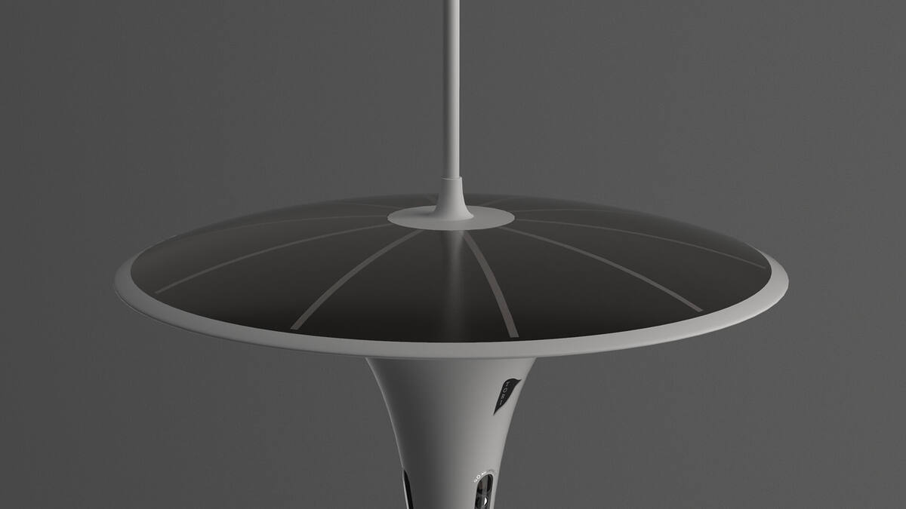
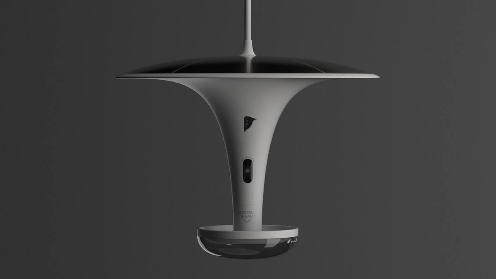
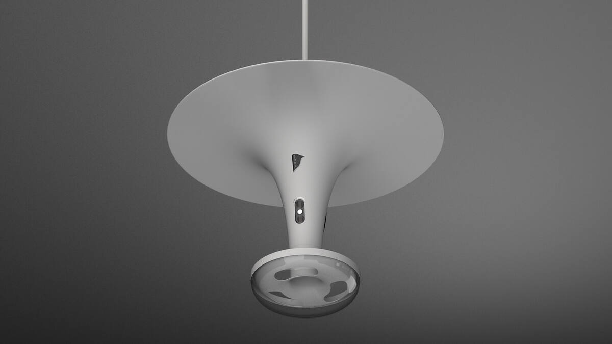

Chatbot WhatsApp intelligent avec OpenAI GPT
TassGPT est un bot WhatsApp intégrant l'API OpenAI, développé entre janvier et septembre 2024. Ce projet combine développement backend, intégration d'IA générative et déploiement cloud pour offrir une expérience conversationnelle intelligente via WhatsApp.
Architecture technique
Backend Python/Flask exposant les webhooks WhatsApp Business API. Intégration de l'API OpenAI pour la génération de réponses contextuelles. Base de données PostgreSQL pour la persistance des conversations et des profils utilisateurs.
Déploiement et infrastructure
Conteneurisation complète avec Docker, déploiement sur serveur Linux. Gestion des sessions, des contextes de conversation et des limites de quota. Architecture résiliente adaptée à un usage en production.
Projet
TassGPT
Type
Intelligence Artificielle · Bot conversationnel · FullStack
Date
Janvier — Septembre 2024
Technologies
Python · Flask · OpenAI API · PostgreSQL · Docker
Plateforme
WhatsApp Business API · Linux


